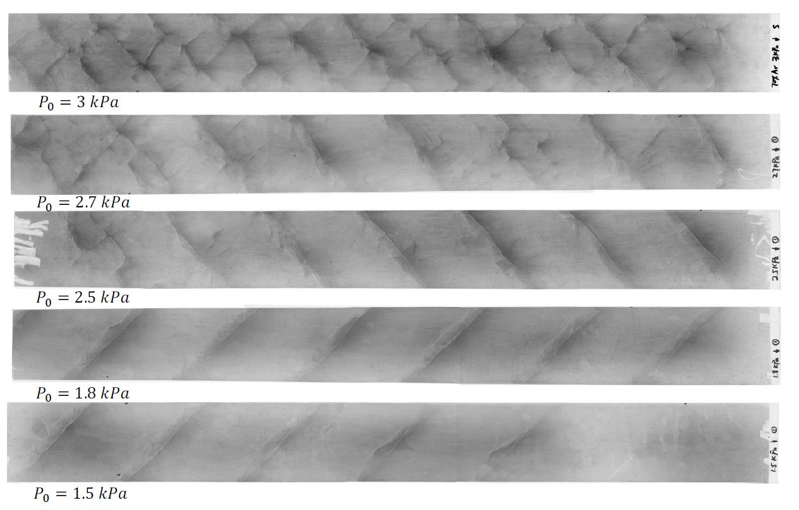
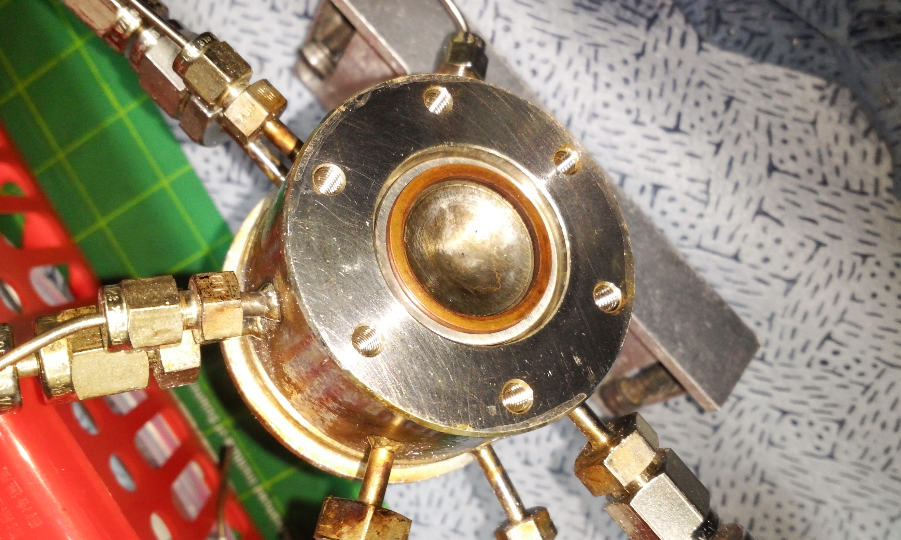

Maxime Monette
Space propulsion engineer with international experience in mechanical design, chemical propulsion and hot-fire testing, electric propulsion and plasma diagnostics, breakthrough propulsion and high-resolution thrust measurements, flight-relevant hardware, environmental testing, modeling, mission and data analysis.
Projects
- Thrust signal analysis demo
- Low-thrust mission analysis demo
- Sensor calibration and uncertainty propagation
Links
Publications
Click to show/hide publications list
- Monette, M., et al., "Morpheus GO-2 IOD: In-orbit Demonstration of a 40-Thruster FEEP System", 39th IEPC Proceedings (2025) Link
- Monette, M., et al., "Vacuum pendulum test for a modified Kaluza–Klein theory", International Journal of Modern Physics A (2024) Link
- Monette, M., et al., "Centrifugal balance for the detection of mass fluctuations in advanced propulsion concepts", Acta Astronautica 212, pp. 270-283 (2023) Link
- Monette, M., et al., "Experimental investigation of Mach-Effect thrusters on torsion balances", Acta Astronautica 182, pp. 531–546 (2021) Link
- Kößling, M., Monette, M., et al., "The space drive project–thrust balance development and new measurements of the mach-effect and EMDrive thrusters", Acta Astronautica 161, pp. 139–152 (2019) Link
- Monette, M., et al., "5 N Scale Preliminary Thruster Test with an ADN-based Monopropellant", KSPE Journal 22, 2, pp. 29-37 (2018) Link
- Monette, M., et al., "Transfer Trajectory Analysis for a Korean Lunar Orbiter Mission", Korean Aerospace Society Conference, pp. 733-736 (2015) Link
Gallery

